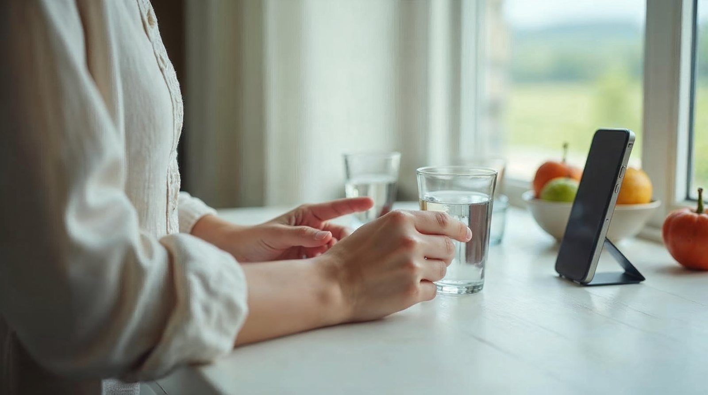
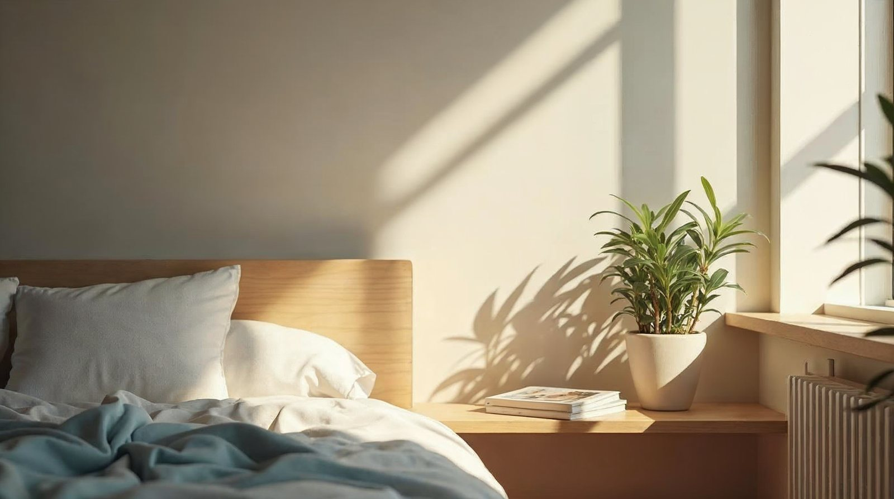
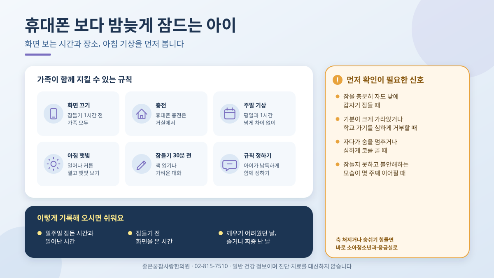

이종호 한의사 감수좋은꿈참사랑한의원 대표원장 (한의사 면허번호 19769)발행 2026-11-23 · 수정 2026-11-26
이 글의 차례
- 왜 이런 불편이 생길 수 있나요
- 왜 화면을 끄고 누워도 금방 잠이 안 올까요?
- 잠이 안 와서 보는 것과 보다가 잠을 놓치는 것은 다른 얘기예요
- 끝없는 영상은 끝없이 채워지는 접시 같아요
- 우리 아이는 어떤지 체크해 보세요
- 친구 연락 때문에 못 내려놓는 아이도 있어요
- 숙제에 화면이 필요할 때는요
- 한 번에 말고 조금씩 당겨요
- 잠이 모자라면 낮에 이런 모습이 보여요
- 한의학에서는 이렇게 봐요
- 잠들기 전 시간은 이렇게 보내 보세요
- 보호자분이 지치지 않는 것도 중요해요
- 낮에 몸을 쓰면 밤이 쉬워져요
- 먼저 이렇게 여쭙니다
- 일상에서 먼저 해 볼 수 있는 것
- 가족 규칙은 이렇게 정하면 오래가요
- 아침을 바꾸면 밤이 따라와요
- 주말 몰아 자기는 이렇게 조절해요
- 보호자분께 부탁드릴 건 딱 하나예요
- 한의원에서 함께 살필 수 있는 경우
- 처음 오시면 어떤 순서로 보나요?
- 이렇게 기록해 오시면 상담이 쉬워집니다
- 이런 증상은 먼저 확인이 필요합니다
아이가 휴대폰을 보다 밤늦게 잠드는 것은 밝은 화면 빛과 끝없이 이어지는 영상이 잠드는 시간을 미루기 때문인 경우가 많아, 화면을 보는 시간과 장소, 잠드는 시간과 아침 기상을 먼저 확인하고 가족이 함께 지킬 수 있는 규칙을 정합니다.
숙제를 마치고 휴대폰을 보다 보면 밤 12시가 넘어서야 잠든다는 초등 고학년과 중학생이 많고, 아침마다 깨우는 일이 전쟁이라는 부모님 이야기도 자주 듣습니다.
진료실에서 보호자분이 한숨 쉬며 말씀하세요. "원장님, 휴대폰만 없으면 될 것 같은데 뺏으면 난리가 나요." 그 옆에서 아이는 고개를 숙이고 있고요. 저는 그 장면이 참 익숙해요. 그리고 두 분 다 틀린 말을 하는 게 아니라는 것도 알아요.
먼저 안심하셔도 되는 부분이 있어요. 초등 고학년에서 중학생 무렵에는 원래 잠드는 시간이 조금씩 늦어져요. 몸의 시계가 뒤로 밀리는 시기라서, 예전처럼 9시에 졸리지 않는 게 자연스러운 거예요. 거기에 화면이 더해지면서 더 늦어지는 경우가 많은 거죠.
왜 이런 불편이 생길 수 있나요
- 밤에 밝은 화면 빛을 오래 보면 잠을 부르는 몸의 신호가 늦게 나올 수 있습니다.
- 짧은 영상과 게임은 그만둘 때를 놓치기 쉬워 잠드는 시간이 점점 밀립니다.
- 늦게 자고 주말에 몰아서 자면 평일 아침 기상이 더 힘들어집니다.
- 한의학에서는 아이의 잠과 입맛, 짜증 같은 생활 전체의 리듬을 함께 살핍니다.
왜 화면을 끄고 누워도 금방 잠이 안 올까요?
왜인 줄 아세요? 화면을 끈다고 몸이 바로 꺼지지 않거든요. 게임을 하거나 짧은 영상을 연달아 보면 몸은 작은 긴장 상태에 들어가요. 옛날 사람들이 사자나 호랑이를 만났을 때 켜지던 신경이, 화면 속 자극에도 조금씩 켜지는 거예요.
이 신경이 켜져 있으면 심장이 조금 빨라지고 머리가 또렷해져요. 그래서 화면을 끄고 누워도 한동안 눈이 말똥말똥한 거죠. 아이가 일부러 안 자는 게 아니라 몸이 아직 '깨어 있어야 할 때'라고 느끼는 경우가 많아요.
여기에 밝은 빛까지 더해지면, 몸은 아직 낮이라고 착각해요. 잠을 부르는 신호가 늦게 나오니 잠드는 시간이 또 밀리고요. 그러니까 사실은 빛과 자극, 두 가지가 겹쳐서 잠을 미루는 거예요.
잠이 안 와서 보는 것과 보다가 잠을 놓치는 것은 다른 얘기예요
저는 이걸 꼭 둘로 나눠서 여쭤요. 누워도 잠이 안 와서 심심해서 휴대폰을 집는 아이가 있고, 졸린데도 영상이 재밌어서 잠들 때를 놓치는 아이가 있거든요.
앞의 아이는 잠드는 힘 자체를 먼저 살펴야 해요. 낮에 활동이 적었는지, 걱정거리가 있는지, 저녁에 카페인 음료를 마셨는지 같은 거요. 뒤의 아이는 화면을 멈추는 방법, 그러니까 규칙과 환경을 바꾸는 쪽이 먼저예요.
끝없는 영상은 끝없이 채워지는 접시 같아요
뷔페에서 접시가 비는 순간 누가 계속 새 음식을 올려 준다고 생각해 보세요. 배가 불러도 자꾸 먹게 되잖아요. 짧은 영상의 자동 재생이 딱 그래요. 끝이 없으니 그만둘 때를 스스로 정하기가 아주 어려운 거예요.
어른도 어려운 일이에요. 저도 밤에 영상 하나만 보려다 시계를 보고 놀랄 때가 있거든요. 그래서 아이 의지만 탓할 일이 아니라, 접시를 치워 주는 환경이 필요한 거예요.
그래서 저는 휴대폰을 나쁜 물건으로 몰지 않아요. 아이에게 휴대폰은 친구와 이어지는 창이고 쉬는 방법이기도 하거든요. 못 쓰게 하는 게 아니라, 잘 쓰면 되는 거예요. 언제 내려놓을지만 같이 정하면 돼요.
우리 아이는 어떤지 체크해 보세요
- 잠들기 직전까지 휴대폰이나 태블릿을 본다
- 휴대폰을 베개 옆이나 침대에 두고 잔다
- 주말에는 평일보다 2시간 넘게 늦게 일어난다
- 아침에 여러 번 깨워야 겨우 일어난다
- 아침을 거르거나 입맛이 없다고 한다
- 오후나 저녁에 짜증이 늘고 쉽게 지친다
몇 개 해당하더라도 걱정부터 하실 일은 아니에요. 어디부터 바꿀지 알려 주는 목록이라고 생각하시면 돼요.
친구 연락 때문에 못 내려놓는 아이도 있어요
이 나이 아이들에게 단체 대화방은 학교의 연장이에요. 밤에 친구들이 이야기를 나누는데 혼자 빠지면 다음 날 대화에 못 끼일까 봐 걱정하는 아이가 많아요. 그 마음을 가볍게 보시면 아이는 더 숨기게 돼요.
그래서 "몇 시 이후엔 답장 안 해도 괜찮다"는 걸 아이와 같이 정해 보세요. 친구들에게 "나 10시엔 폰 거실에 둬"라고 미리 말해 두면, 아이도 덜 불안해하는 경우가 많아요. 반 친구 보호자들끼리 비슷한 약속을 하면 더 수월하고요.
숙제에 화면이 필요할 때는요
요즘은 숙제도 태블릿이나 컴퓨터로 하는 경우가 많죠. 그러다 보니 숙제와 영상이 한 화면에서 섞여 버려요. 숙제를 하다가 잠깐 영상을 열면 한 시간이 금방 가거든요.
숙제는 가능하면 거실처럼 보호자분 눈이 닿는 곳에서, 정해진 시간 안에 하게 해 주세요. 숙제가 끝나면 화면도 같이 닫는 걸로요. 침실은 잠자는 곳으로만 남겨 두는 게 좋아요.
한 번에 말고 조금씩 당겨요
지금 새벽 1시에 자는 아이에게 내일부터 10시에 자라고 하면 거의 지켜지지 않아요. 누워도 잠이 안 오니 더 괴롭거든요. 몸의 시계는 한 번에 크게 옮기기 어려워요.
그래서 저는 며칠에 15분에서 30분씩만 당기자고 말씀드려요. 최대한 천천히요. 아침 기상 시간을 먼저 고정하고, 화면 끄는 시간을 조금씩 앞으로 옮기면 잠드는 시간도 따라오는 경우가 많아요.
잠이 모자라면 낮에 이런 모습이 보여요
- 아침을 안 먹거나 입맛이 없다고 한다
- 학교에서 돌아오면 바로 눕고 싶어 한다
- 작은 일에도 짜증이 늘고 형제와 자주 다툰다
- 오후에 머리가 무겁다거나 멍하다고 한다
- 주말이면 낮까지 깨지 않는다
이런 모습이 늘었다면 성격이 변했다기보다 잠이 모자란 신호일 수 있어요. 아이를 혼내기 전에 잠든 시간부터 한번 봐 주세요.
한의학에서는 이렇게 봐요
한의학에서는 밤에 쉬어야 할 몸이 쉬지 못하면 열이 위로 뜨고, 그 열이 짜증과 입맛, 소화에도 영향을 준다고 봐요. 늦게 자는 아이가 아침에 입맛이 없고 쉽게 예민해지는 모습과 잘 맞아떨어지는 설명이에요.
그래서 저는 잠만 따로 보지 않고 소화, 대변, 손발이 뜨거운지 찬지까지 같이 여쭤요. 몸 전체의 리듬이 맞아야 잠도 제자리를 찾기 쉽거든요.
잠들기 전 시간은 이렇게 보내 보세요
예를 들어 10시 반에 자기로 했다면, 9시 반에 휴대폰을 거실에 두고 씻으러 가는 거예요. 씻고 나와서는 방 불을 조금 어둡게 하고, 책이나 음악처럼 조용한 걸로 30분쯤 보내요.
이때 내일 할 일을 종이에 적어 두는 것도 좋아요. 머릿속에 남은 숙제나 걱정을 종이로 옮겨 놓으면, 누워서 그 생각을 붙잡고 뒤척이는 일이 줄어드는 아이가 있거든요.
보호자분이 지치지 않는 것도 중요해요
매일 밤 "이제 꺼"를 몇 번씩 말하다 보면 보호자분도 지쳐요. 그 실랑이가 이어지면 아이와 사이까지 서먹해지고요. 그래서 규칙을 정할 때 끄는 시간을 알려 주는 알람을 아이 휴대폰에 같이 맞춰 두시면 좋아요.
말로 하는 대신 알람이 대신 말해 주는 거예요. 보호자분은 잔소리하는 사람이 아니라 같이 지키는 사람이 되면 돼요. 아이가 지킨 날은 짧게라도 꼭 알아봐 주세요.
낮에 몸을 쓰면 밤이 쉬워져요
운동을 많이 하라는 게 아니에요. 학교 끝나고 학원, 집, 화면으로만 이어지는 하루라면 몸이 피곤할 틈이 없어요. 머리만 피곤하고 몸은 덜 써서, 밤이 돼도 졸린 느낌이 약한 거예요.
하교길에 한 정거장 걷기, 저녁 먹고 보호자와 동네 한 바퀴 걷기 정도면 충분해요. 약하게라도 매일 하는 게 가끔 세게 하는 것보다 잠에는 훨씬 도움이 되는 경우가 많거든요.
먼저 이렇게 여쭙니다
- 잠들기 전 몇 시간 정도 화면을 보나요?
- 휴대폰을 침실에 두고 자나요?
- 주말에는 몇 시에 일어나나요?
- 낮에 졸거나 집중이 어려워 보이나요?
- 화면을 끄고 누우면 금방 잠드나요?

일상에서 먼저 해 볼 수 있는 것
- 잠들기 1시간 전에는 가족 모두 화면 끄기
- 휴대폰 충전은 거실에서 하기
- 주말 기상 시간을 평일과 1시간 넘게 차이 나지 않게 하기
- 아침에 일어나 커튼을 열고 햇빛 보기
- 잠들기 전 30분은 책 읽기나 가벼운 대화처럼 조용한 시간 만들기
화면을 줄이라고만 하면 빈 시간이 생겨요. 그 시간을 무엇으로 채울지도 함께 정해 주세요. 그림 그리기, 책, 음악 듣기, 보호자와 오늘 있었던 이야기 나누기처럼 자극이 적은 걸로요.
저녁에 콜라나 에너지 음료, 진한 초콜릿 음료를 마시는 아이라면 그것도 같이 봐 주세요. 카페인은 생각보다 오래 남아서 잠드는 시간을 더 밀 수 있거든요.
가족 규칙은 이렇게 정하면 오래가요
규칙은 아이와 함께 정해야 지켜져요. 보호자분이 혼자 정해서 통보하면, 아이는 규칙을 지키는 게 아니라 피하는 방법을 찾게 되거든요. 아이가 납득할 수 있는 이유를 같이 이야기해 주세요.
몇 시에 끌지, 어디에 둘지, 주말은 어떻게 할지, 숙제에 화면이 필요할 때는 어떻게 할지까지 정해서 종이에 써 냉장고에 붙여 두세요. 예외를 미리 정해 두면 싸울 일이 확 줄어요.
그리고 이게 제일 중요해요. 보호자분도 같이 지켜 주세요. 아이에게 끄라고 하면서 거실에서 휴대폰을 보시면, 아이는 규칙이 아니라 벌이라고 느껴요. 온 가족이 같이 끄면 그 시간이 오히려 대화 시간이 되기도 해요.
아침을 바꾸면 밤이 따라와요
많은 분들이 밤에 일찍 재우려고만 애쓰세요. 그런데 사실은 아침에 일어나는 시간을 먼저 고정하는 게 더 쉬운 경우가 많아요. 일어나는 시간이 일정하면 밤에 졸린 시간도 조금씩 따라오거든요.
일어나면 커튼을 열고 햇빛을 보게 해 주세요. 아침 빛은 몸에 '이제 낮이야'라는 신호를 주고, 그 신호가 있어야 밤에 '이제 잘 시간이야'라는 신호도 제때 나와요. 간단한 아침 한 입도 몸을 깨우는 데 도움이 돼요.
주말 몰아 자기는 이렇게 조절해요
평일에 모자란 잠을 주말에 몰아서 채우고 싶은 마음은 당연해요. 그런데 토요일에 11시, 일요일에 12시에 일어나면, 일요일 밤에 잠이 안 오고 월요일 아침이 또 전쟁이 되죠.
주말에도 평일보다 1시간 안쪽으로만 늦게 일어나게 해 보세요. 대신 오후에 아주 피곤해하면 짧은 낮잠은 괜찮아요. 너무 늦은 오후의 긴 낮잠만 피하면 돼요.
보호자분께 부탁드릴 건 딱 하나예요
위에 여러 가지를 적었지만 한꺼번에 다 하시면 아이도 보호자분도 지쳐요. 그래서 저는 하나만 부탁드려요. 휴대폰 충전기를 거실로 옮겨 주세요. 잠잘 때 휴대폰은 거실에서 자는 거예요.
이것만 지켜 주시고 딴 건 편하게 하셔도 돼요. 아이 몸과 잠의 리듬을 살피는 건 제가 맡을게요. 침실에 휴대폰이 없으면 '조금만 더'가 생길 틈이 줄어들거든요.
한의원에서 함께 살필 수 있는 경우
- 잠드는 시간이 계속 늦어지고 아침이 힘든 아이의 경우 잠의 리듬을 함께 살핍니다.
- 입맛이 없고 쉽게 짜증을 내는 경우 생활 전반을 함께 살핍니다.
- 보호자와 아이가 함께 지킬 수 있는 생활 계획을 함께 정리합니다.
좋은꿈참사랑한의원에서는 아이의 맥을 먼저 짚고, 아이 본인의 이야기와 보호자의 이야기를 모두 들으며 아이의 몸 상태를 살핀 뒤 아이의 나이와 상태에 맞는 방법을 함께 정합니다. 규칙은 아이가 납득할 수 있게 함께 정하는 것을 중요하게 생각합니다.
처음 오시면 어떤 순서로 보나요?
처음 오시면 저는 아이 맥부터 짚어요. 모든 분께 그렇게 하거든요. 보호자분과 함께 들어오시면 되고, 아이가 어색해하면 좋아하는 게임이나 영상 이야기를 먼저 나누기도 해요.
그다음 아이에게 직접 물어봐요. "몇 시쯤 졸려?", "자려고 누우면 무슨 생각이 나?" 같은 거요. 보호자분 이야기도 듣지만, 아이가 자기 입으로 말하게 하는 게 중요하거든요. 자기 이야기를 들어 준다고 느껴야 규칙도 같이 지켜요.
그러니까 사실은 휴대폰만 보는 게 아니에요. 잠, 입맛, 소화, 짜증, 학교 생활까지 함께 봐요. 잠드는 시간이 밀리면서 입맛과 기분이 같이 흔들리는 아이가 많아서, 몸 전체의 리듬을 같이 맞추는 게 필요하거든요.
한약이 필요하다고 판단되면 그때 상담하고, 먹고 있는 약이나 영양제가 있으면 먼저 확인해요. 먹는 중에 불편해 보이면 복용을 멈추고 연락 주세요. 다시 오시면 지난 기록과 비교하면서 보통 한 달 정도 지켜보고 다음을 정해요.

이렇게 기록해 오시면 상담이 쉬워집니다
- 일주일 동안 잠든 시간과 일어난 시간(평일·주말)
- 잠들기 전 화면을 본 시간
- 아침에 깨우기 어려웠던 날
- 낮에 졸거나 짜증이 심했던 날
기록은 아이가 직접 하게 해 보셔도 좋아요. 휴대폰에 있는 화면 사용 시간 기능을 같이 열어 보면, 아이도 자기가 얼마나 봤는지 보고 놀라는 경우가 있어요. 혼내려는 게 아니라 같이 보는 거라는 걸 미리 말해 주세요.
기록을 볼 때는 잘 지킨 날을 먼저 찾아봐요. 일찍 잔 날 무엇이 달랐는지, 그날 화면을 언제 껐는지 보면 아이에게 맞는 방법이 거기 숨어 있는 경우가 많거든요. 못 지킨 날을 세는 것보다 훨씬 쓸모 있어요.
궁금한 건 편하게 물어보세요. 아이와 보호자분이 같이 지킬 수 있는 방법을 오시면 함께 찾아볼게요.
이런 증상은 먼저 확인이 필요합니다
- 잠을 충분히 자도 낮에 갑자기 잠드는 경우
- 스스로를 해칠 생각이 들면 ☎ 109로 바로 연락하세요.
이런 신호가 있으면 한의원보다 가까운 병원이나 응급실을 먼저 찾으세요.

여쭙는 것
- 잠들기 전 몇 시간 정도 화면을 보나요?
- 휴대폰을 침실에 두고 자나요?
- 주말에는 몇 시에 일어나나요?
생활에서 해 볼 것
- 잠들기 1시간 전에는 가족 모두 화면 끄기
- 휴대폰 충전은 거실에서 하기
- 주말 기상 시간을 평일과 1시간 넘게 차이 나지 않게 하기
한의원에서 함께 살필 것
- 잠드는 시간이 계속 늦어지고 아침이 힘든 아이의 경우 잠의 리듬을 함께 살핍니다.
- 입맛이 없고 쉽게 짜증을 내는 경우 생활 전반을 함께 살핍니다.
- 보호자와 아이가 함께 지킬 수 있는 생활 계획을 함께 정리합니다.
먼저 확인이 필요한 신호
- 잠을 충분히 자도 낮에 갑자기 잠드는 경우
- 스스로를 해칠 생각이 들면 109로 바로 연락하세요.
한눈에 보는 표
| 구분 | 핵심 |
|---|---|
| 여쭙는 것 | 잠들기 전 몇 시간 정도 화면을 보나요? 휴대폰을 침실에 두고 자나요? |
| 생활에서 해 볼 것 | 잠들기 1시간 전에는 가족 모두 화면 끄기 휴대폰 충전은 거실에서 하기 |
| 한의원에서 함께 살필 것 | 잠드는 시간이 계속 늦어지고 아침이 힘든 아이의 경우 잠의 리듬을 함께 살핍니다. 입맛이 없고 쉽게 짜증을 내는 경우 생활 전반을 함께 살핍니다. |
| 먼저 확인이 필요한 신호 | 잠을 충분히 자도 낮에 갑자기 잠드는 경우 스스로를 해칠 생각이 들면 109로 바로 연락하세요. |
자주 묻는 질문
휴대폰을 아예 뺏어야 하나요?
갑자기 뺏기보다 아이와 함께 규칙을 정하고 부모님도 같이 지키는 것이 더 오래갑니다.
수면 일기가 도움이 되나요?
잠든 시간과 일어난 시간을 일주일만 적어 와도 이야기를 나누는 데 큰 도움이 됩니다.
주말 늦잠은 얼마나 괜찮나요?
평일과 1시간 안쪽 차이를 권합니다. 그보다 늦으면 월요일 아침이 더 힘들어질 수 있습니다.
공부 때문에 늦게 자는 건 어떻게 하나요?
숙제와 화면 시간을 나눠 보고, 공부가 많은 날은 잠드는 시간을 미리 정해 두는 방법을 함께 찾습니다.
화면 밝기를 낮추거나 야간 모드를 켜면 괜찮나요?
빛은 조금 줄일 수 있지만 영상과 게임의 자극, 보는 시간은 그대로예요. 끄는 시간을 정하는 것이 먼저입니다.
좋은꿈참사랑한의원은 재진 때 지난번 이야기부터 이어서 여쭙니다. 진료시간과 예약은 오시는 길에서 확인하세요.
어디서 상담받을 수 있나요?
좋은꿈참사랑한의원은 서울 동작구 만양로2길 2 신성빌딩 3층·5층(서울 동작구 상도동, 7호선 상도역 3번 출구 근처)에 있습니다. 한의사 3명(이종호 대표원장, 조영기 수석진료원장, 정원영 진료원장)이 진료합니다. 진료시간은 평일 09:30~20:00(점심 13:00~14:00), 토·일·공휴일 09:30~15:00이며, 방문 전 전화로 확인을 권합니다. 예약은 네이버 예약, 카카오톡 상담, 전화 02-815-7510로 받습니다.
이 글은 일반적인 건강 정보이며 개인의 진단이나 치료를 대신하지 않습니다. 증상이 있거나 복용 중인 약이 있다면 진료를 통해 확인하세요. 치료 효과는 개인마다 다를 수 있습니다.
작성 기준: 일반적으로 알려져 있는 건강 정보를 참고해 정리했습니다(대표원장 감수). 증상 기록은 1~2주 동안 하루 1회, 비슷한 시간에 적어 오시면 지난 상태와 비교하기 쉽습니다.